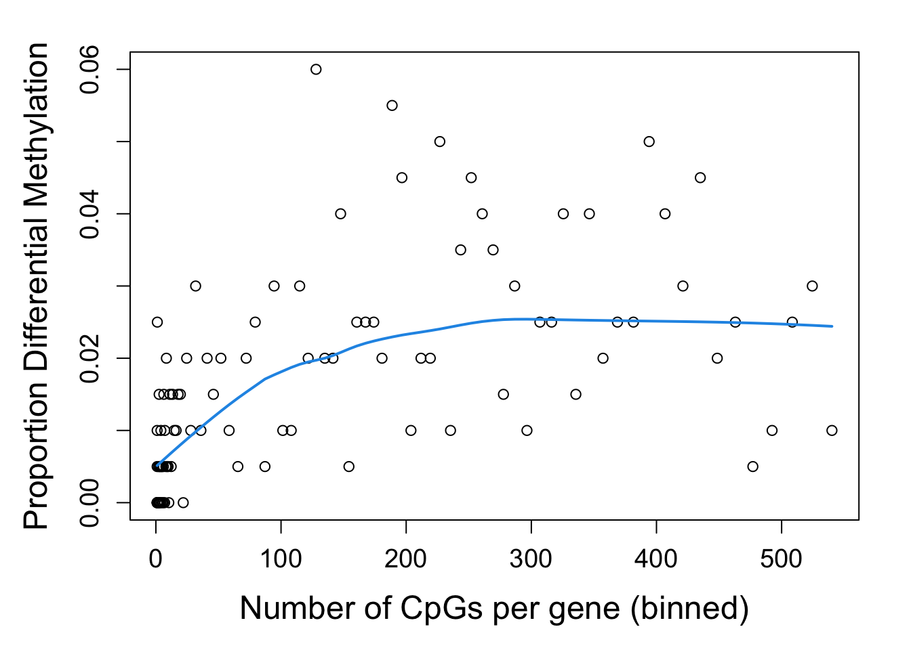
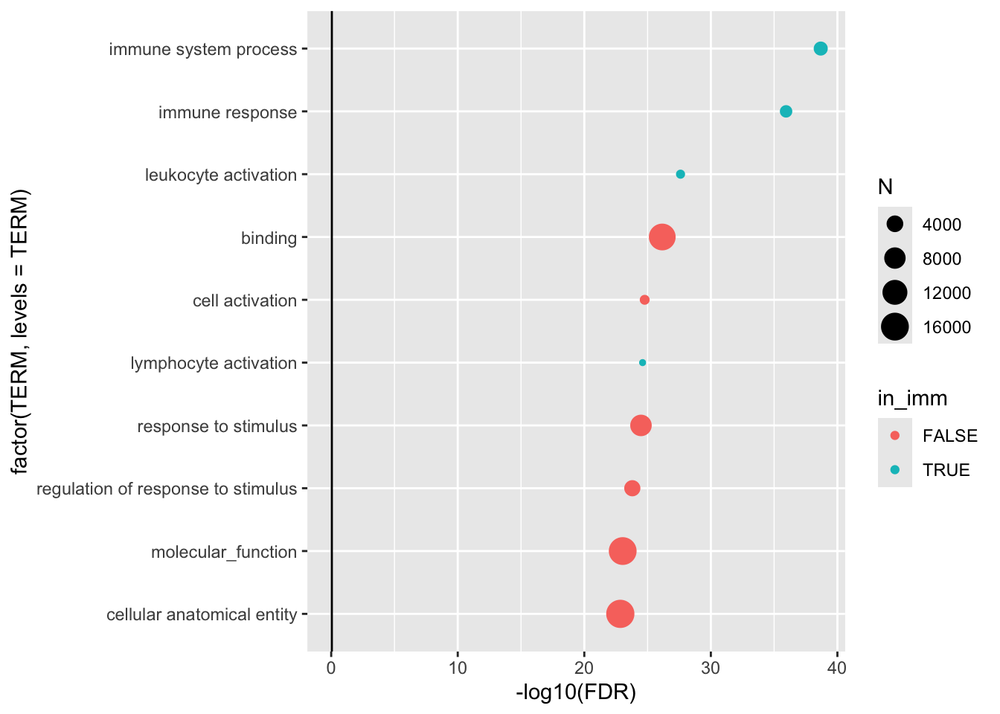
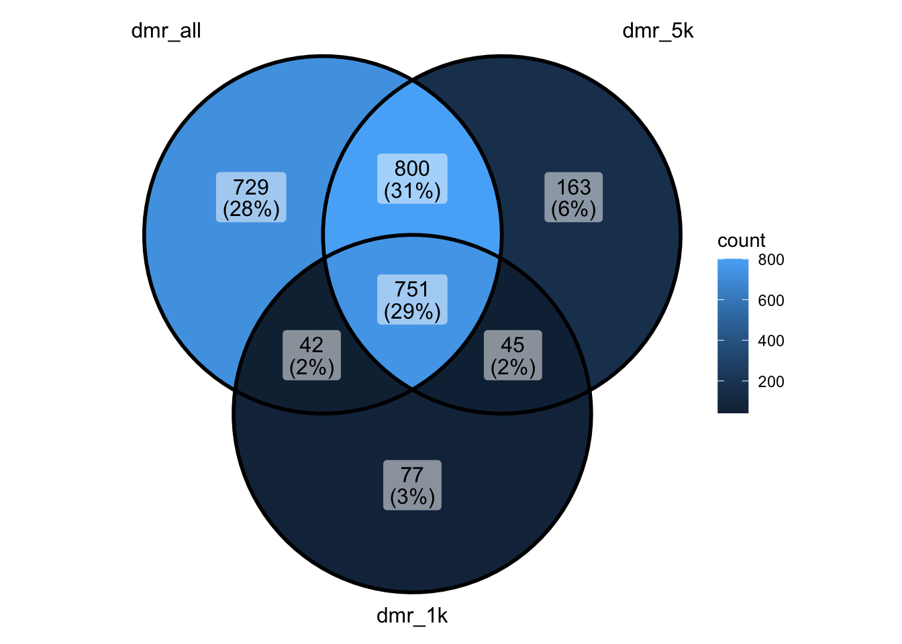
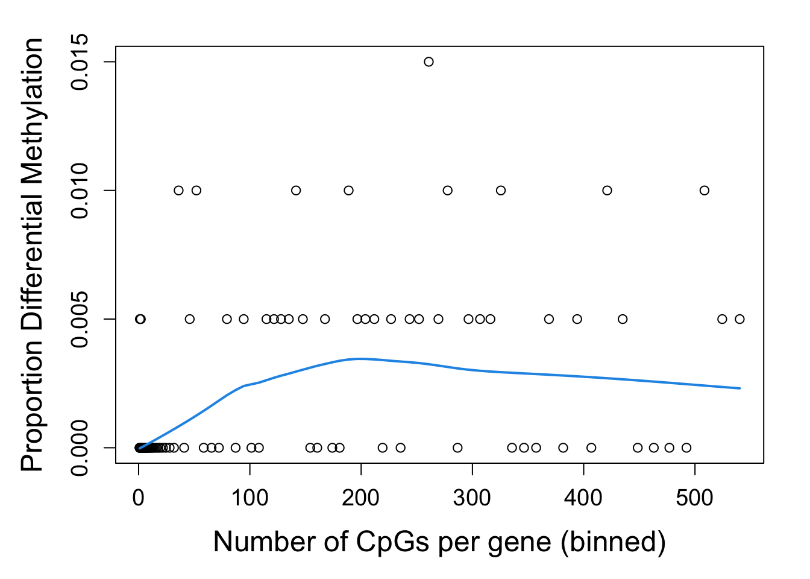
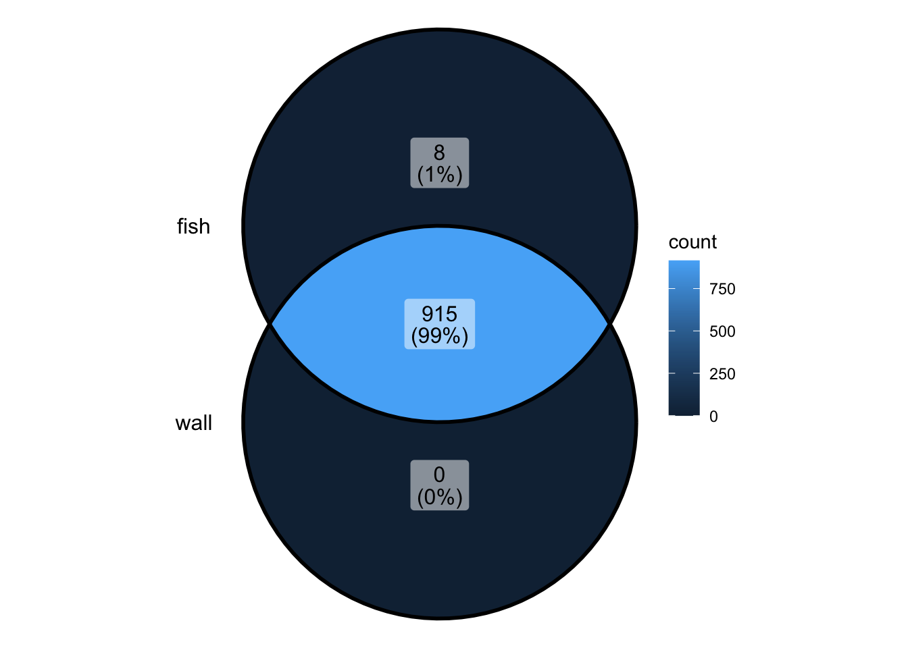
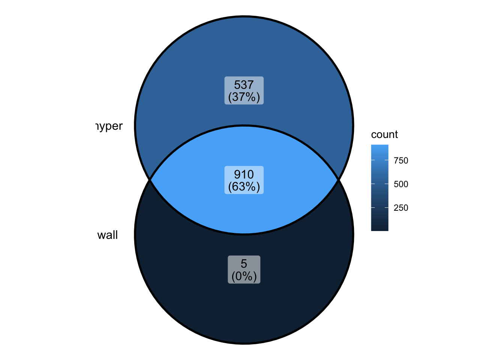
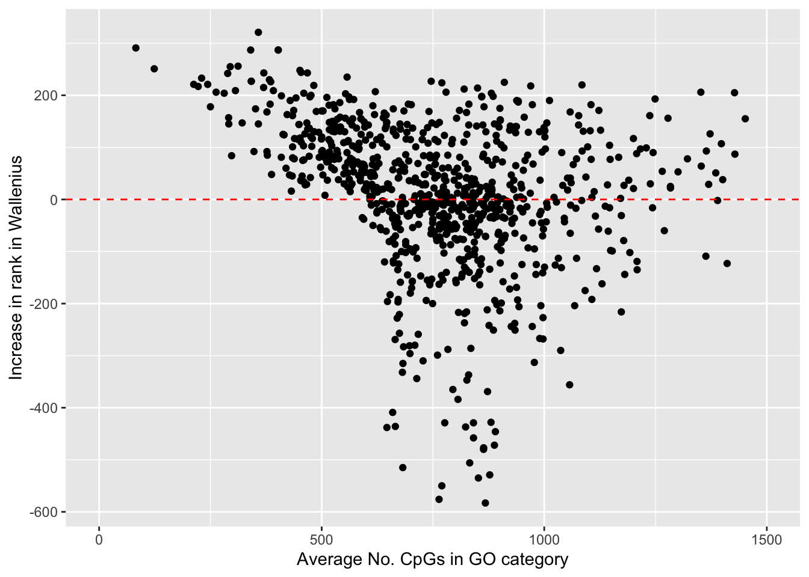
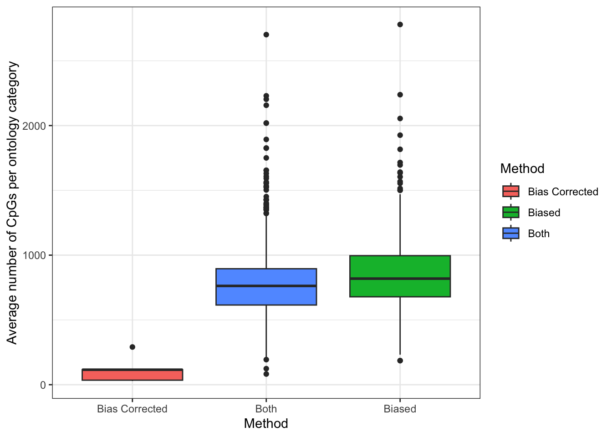
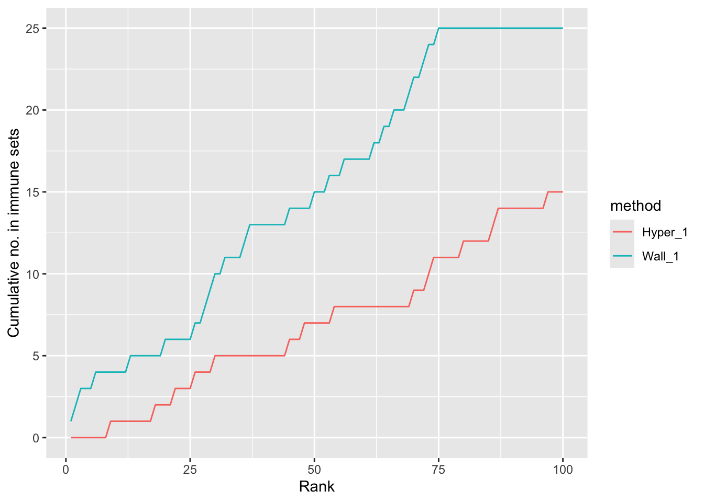
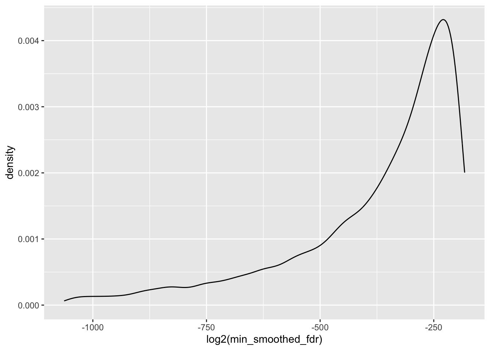

Last updated: 2025-05-07
Checks: 7 0
Knit directory: 2_ontology_bias/analysis/
This reproducible R Markdown analysis was created with workflowr (version 1.7.1). The Checks tab describes the reproducibility checks that were applied when the results were created. The Past versions tab lists the development history.
Great! Since the R Markdown file has been committed to the Git repository, you know the exact version of the code that produced these results.
Great job! The global environment was empty. Objects defined in the global environment can affect the analysis in your R Markdown file in unknown ways. For reproduciblity it’s best to always run the code in an empty environment.
The command set.seed(20240905) was run prior to running
the code in the R Markdown file. Setting a seed ensures that any results
that rely on randomness, e.g. subsampling or permutations, are
reproducible.
Great job! Recording the operating system, R version, and package versions is critical for reproducibility.
Nice! There were no cached chunks for this analysis, so you can be confident that you successfully produced the results during this run.
Great job! Using relative paths to the files within your workflowr project makes it easier to run your code on other machines.
Great! You are using Git for version control. Tracking code development and connecting the code version to the results is critical for reproducibility.
The results in this page were generated with repository version 90ba116. See the Past versions tab to see a history of the changes made to the R Markdown and HTML files.
Note that you need to be careful to ensure that all relevant files for
the analysis have been committed to Git prior to generating the results
(you can use wflow_publish or
wflow_git_commit). workflowr only checks the R Markdown
file, but you know if there are other scripts or data files that it
depends on. Below is the status of the Git repository when the results
were generated:
Ignored files:
Ignored: .DS_Store
Ignored: .Rhistory
Ignored: .Rproj.user/
Ignored: analysis/.DS_Store
Ignored: analysis/input/
Ignored: analysis/mc_h1/
Ignored: analysis/myEnvironment.RData
Ignored: data/cell_line_wgbs/
Ignored: data/gene_sets/
Ignored: data/long_read/
Ignored: data/microarray/
Ignored: data/wgbs/
Ignored: data/wgbs_2/
Ignored: data/wgbs_3/
Ignored: output/figures/
Ignored: renv/library/
Ignored: renv/staging/
Untracked files:
Untracked: analysis/00_cpgFeatures.Rmd
Untracked: analysis/04_compareGSTResults.Rmd
Untracked: analysis/04_promoterAnalysis.Rmd
Untracked: analysis/07_monoGranAnalysis.Rmd
Untracked: analysis/07_tCellAnalysis.Rmd
Untracked: analysis/clusterlog.txt
Untracked: analysis/input.tar.gz
Untracked: analysis/myEnvironment.RDataTmp
Untracked: code/ChatGPT_translate.html
Untracked: code/ChatGPT_translate_files/
Untracked: code/background.R
Untracked: code/dm_analysis_t.R
Unstaged changes:
Modified: .gitignore
Modified: 2_ontology_bias.Rproj
Modified: _workflowr.yml
Modified: analysis/00_datasets.Rmd
Modified: analysis/00_longReadAnalysis.Rmd
Modified: analysis/03_genesToGST.Rmd
Modified: analysis/04_swapInputs.Rmd
Modified: analysis/05_plots.Rmd
Modified: analysis/index.Rmd
Modified: code/function_binBiasPlot.R
Modified: renv.lock
Modified: renv/.gitignore
Modified: renv/activate.R
Modified: renv/settings.json
Note that any generated files, e.g. HTML, png, CSS, etc., are not included in this status report because it is ok for generated content to have uncommitted changes.
These are the previous versions of the repository in which changes were
made to the R Markdown (analysis/03_runGST.Rmd) and HTML
(docs/03_runGST.html) files. If you’ve configured a remote
Git repository (see ?wflow_git_remote), click on the
hyperlinks in the table below to view the files as they were in that
past version.
| File | Version | Author | Date | Message |
|---|---|---|---|---|
| Rmd | 90ba116 | Caitlin Page | 2025-05-07 | wflow_publish("03_runGST.Rmd") |
| html | 2997135 | Caitlin Page | 2025-05-01 | Build site. |
| Rmd | d8755b4 | Caitlin Page | 2025-05-01 | wflow_publish("03_runGST.Rmd") |
| Rmd | 604fd47 | Caitlin Page | 2025-04-23 | update |
| Rmd | d5121f6 | Caitlin Page | 2025-03-31 | results |
| Rmd | 4ff80cd | Caitlin Page | 2025-03-13 | run gst with dmrcate |
library(plyranges)Loading required package: BiocGenerics
Attaching package: 'BiocGenerics'The following objects are masked from 'package:stats':
IQR, mad, sd, var, xtabsThe following objects are masked from 'package:base':
anyDuplicated, aperm, append, as.data.frame, basename, cbind,
colnames, dirname, do.call, duplicated, eval, evalq, Filter, Find,
get, grep, grepl, intersect, is.unsorted, lapply, Map, mapply,
match, mget, order, paste, pmax, pmax.int, pmin, pmin.int,
Position, rank, rbind, Reduce, rownames, sapply, setdiff, table,
tapply, union, unique, unsplit, which.max, which.minLoading required package: IRangesLoading required package: S4VectorsLoading required package: stats4
Attaching package: 'S4Vectors'The following object is masked from 'package:utils':
findMatchesThe following objects are masked from 'package:base':
expand.grid, I, unnameLoading required package: GenomicRangesLoading required package: GenomeInfoDb
Attaching package: 'plyranges'The following object is masked from 'package:IRanges':
sliceThe following object is masked from 'package:stats':
filterlibrary(dplyr)
Attaching package: 'dplyr'The following objects are masked from 'package:plyranges':
between, n, n_distinctThe following objects are masked from 'package:GenomicRanges':
intersect, setdiff, unionThe following object is masked from 'package:GenomeInfoDb':
intersectThe following objects are masked from 'package:IRanges':
collapse, desc, intersect, setdiff, slice, unionThe following objects are masked from 'package:S4Vectors':
first, intersect, rename, setdiff, setequal, unionThe following objects are masked from 'package:BiocGenerics':
combine, intersect, setdiff, unionThe following objects are masked from 'package:stats':
filter, lagThe following objects are masked from 'package:base':
intersect, setdiff, setequal, unionlibrary(ggplot2)
library(BiasedUrn)
library(ggVennDiagram)
library(org.Hs.eg.db)Loading required package: AnnotationDbiLoading required package: BiobaseWelcome to Bioconductor
Vignettes contain introductory material; view with
'browseVignettes()'. To cite Bioconductor, see
'citation("Biobase")', and for packages 'citation("pkgname")'.
Attaching package: 'AnnotationDbi'The following object is masked from 'package:dplyr':
selectThe following object is masked from 'package:plyranges':
selectwgbs_counts <- readRDS("../output/wgbs_counts.rds")
biomart_genes <- readRDS("../output/genes_biomart.rds")
dmrcate_seq_dmr <- readRDS("../output/dmrcate_seq_dmr.rds") %>% data.frame()
dmrcate_seq_anno <- readRDS("../output/dmrcate_seq_anno.rds")
dmrcate_seq_anno <- data.frame(dmrcate_seq_anno@ranges)
immuneGO <- read.table("../data/gene_sets/GO-immune-system-process.txt", header = FALSE)
names(immuneGO) <- "GOID"
immuneGO <- distinct(immuneGO)source("../code/mmGST.R")
source("../code/function_binBiasPlot.R")Loading required package: GenomicAlignmentsLoading required package: SummarizedExperimentLoading required package: MatrixGenericsLoading required package: matrixStats
Attaching package: 'matrixStats'The following objects are masked from 'package:Biobase':
anyMissing, rowMediansThe following object is masked from 'package:dplyr':
count
Attaching package: 'MatrixGenerics'The following objects are masked from 'package:matrixStats':
colAlls, colAnyNAs, colAnys, colAvgsPerRowSet, colCollapse,
colCounts, colCummaxs, colCummins, colCumprods, colCumsums,
colDiffs, colIQRDiffs, colIQRs, colLogSumExps, colMadDiffs,
colMads, colMaxs, colMeans2, colMedians, colMins, colOrderStats,
colProds, colQuantiles, colRanges, colRanks, colSdDiffs, colSds,
colSums2, colTabulates, colVarDiffs, colVars, colWeightedMads,
colWeightedMeans, colWeightedMedians, colWeightedSds,
colWeightedVars, rowAlls, rowAnyNAs, rowAnys, rowAvgsPerColSet,
rowCollapse, rowCounts, rowCummaxs, rowCummins, rowCumprods,
rowCumsums, rowDiffs, rowIQRDiffs, rowIQRs, rowLogSumExps,
rowMadDiffs, rowMads, rowMaxs, rowMeans2, rowMedians, rowMins,
rowOrderStats, rowProds, rowQuantiles, rowRanges, rowRanks,
rowSdDiffs, rowSds, rowSums2, rowTabulates, rowVarDiffs, rowVars,
rowWeightedMads, rowWeightedMeans, rowWeightedMedians,
rowWeightedSds, rowWeightedVarsThe following object is masked from 'package:Biobase':
rowMediansLoading required package: BiostringsLoading required package: XVector
Attaching package: 'Biostrings'The following object is masked from 'package:base':
strsplitLoading required package: Rsamtools
Attaching package: 'GenomicAlignments'The following object is masked from 'package:dplyr':
lastgst_res_dmr1 <- run_miss_methyl_b(run_miss_methyl_a(biomart_genes, annoGeneDmr(dmrcate_seq_anno, dmrcate_seq_dmr[1:1000,], "biomart", biomart_genes)), "Wallenius")[[1]]'select()' returned 1:1 mapping between keys and columns
| Version | Author | Date |
|---|---|---|
| 2997135 | Caitlin Page | 2025-05-01 |
gst_res_dmr1$rank_fdr <- 1:nrow(gst_res_dmr1)
gst_res_dmr1 <- gst_res_dmr1 %>% mutate(is.sig = ifelse(FDR < 0.05, TRUE, FALSE))
head(gst_res_dmr1) GOID ONTOLOGY TERM N DE P.DE
GO:0002376 GO:0002376 BP immune system process 2489 180 2.806219e-43
GO:0006955 GO:0006955 BP immune response 1778 142 3.067599e-40
GO:0045321 GO:0045321 BP leukocyte activation 887 94 1.008091e-31
GO:0005488 GO:0005488 MF binding 14490 499 3.739115e-30
GO:0001775 GO:0001775 BP cell activation 1027 97 1.140039e-28
GO:0046649 GO:0046649 BP lymphocyte activation 736 81 2.001881e-28
FDR SigGenesInSet rank_fdr is.sig
GO:0002376 2.078566e-39 NA 1 TRUE
GO:0006955 1.136085e-36 NA 2 TRUE
GO:0045321 2.488976e-28 NA 3 TRUE
GO:0005488 6.923907e-27 NA 4 TRUE
GO:0001775 1.688854e-25 NA 5 TRUE
GO:0046649 2.471323e-25 NA 6 TRUE#saveRDS(gst_res_dmr1, "../output/gst_res_dmrcate_1k.rds")gst_res_dmr1[1:10,] %>% mutate(in_imm = ifelse(GOID %in% immuneGO$GOID, TRUE, FALSE)) %>% .[order(.$FDR, decreasing = TRUE),] %>%
ggplot(aes(x = -log10(FDR), y = factor(.data$TERM, levels = .data$TERM), colour = in_imm, size = N)) +
geom_point() +
geom_vline(xintercept = 0.05, type = "dotted") Warning in geom_vline(xintercept = 0.05, type = "dotted"): Ignoring unknown
parameters: `type`
| Version | Author | Date |
|---|---|---|
| 2997135 | Caitlin Page | 2025-05-01 |
source("../code/mmGST.R")
source("../code/function_binBiasPlot.R")
gst_res_all <- run_miss_methyl_b(run_miss_methyl_a(biomart_genes, annoGeneDmr(wgbs_counts, dmrcate_seq_dmr, "biomart", biomart_genes)), "Wallenius")[[1]]
gst_res_all$rank_fdr <- 1:nrow(gst_res_all)
gst_res_all <- gst_res_all %>% mutate(is.sig = ifelse(FDR < 0.05, TRUE, FALSE))
gst_res_dmr5 <- run_miss_methyl_b(run_miss_methyl_a(biomart_genes, annoGeneDmr(wgbs_counts, dmrcate_seq_dmr[1:5000,], "biomart", biomart_genes)), "Wallenius")[[1]]
gst_res_dmr5$rank_fdr <- 1:nrow(gst_res_dmr5)
gst_res_dmr5 <- gst_res_dmr5 %>% mutate(is.sig = ifelse(FDR < 0.05, TRUE, FALSE))
#saveRDS(gst_res_dmr5, "../output/gst_res_dmrcate_5k.rds")
#saveRDS(gst_res_all, "../output/gst_res_dmrcate_all.rds")head(gst_res_dmr5) GOID ONTOLOGY TERM N DE
GO:0003674 GO:0003674 MF molecular_function 15958 1871
GO:0005488 GO:0005488 MF binding 14490 1769
GO:0110165 GO:0110165 CC cellular anatomical entity 16581 1887
GO:0008150 GO:0008150 BP biological_process 16081 1844
GO:0005575 GO:0005575 CC cellular_component 16841 1894
GO:0009987 GO:0009987 BP cellular process 15088 1771
P.DE FDR SigGenesInSet rank_fdr is.sig
GO:0003674 7.899195e-77 9.670195e-73 NA 1 TRUE
GO:0005488 1.572736e-75 9.626720e-72 NA 2 TRUE
GO:0110165 5.398275e-74 2.202856e-70 NA 3 TRUE
GO:0008150 4.103695e-73 1.255936e-69 NA 4 TRUE
GO:0005575 3.423553e-72 8.382228e-69 NA 5 TRUE
GO:0009987 1.393786e-71 2.843788e-68 NA 6 TRUEhead(gst_res_all) GOID ONTOLOGY TERM N DE
GO:0008150 GO:0008150 BP biological_process 16081 3663
GO:0003674 GO:0003674 MF molecular_function 15958 3698
GO:0005575 GO:0005575 CC cellular_component 16841 3764
GO:0110165 GO:0110165 CC cellular anatomical entity 16581 3740
GO:0009987 GO:0009987 BP cellular process 15088 3498
GO:0005488 GO:0005488 MF binding 14490 3468
P.DE FDR SigGenesInSet rank_fdr is.sig
GO:0008150 1.199295e-152 1.847034e-148 NA 1 TRUE
GO:0003674 1.069463e-150 8.235402e-147 NA 2 TRUE
GO:0005575 3.055545e-149 1.568615e-145 NA 3 TRUE
GO:0110165 2.786500e-148 1.072872e-144 NA 4 TRUE
GO:0009987 9.976731e-143 3.073033e-139 NA 5 TRUE
GO:0005488 1.104056e-140 2.833929e-137 NA 6 TRUEvenn_list <- list(
dmr_all = gst_res_all %>% filter(FDR < 0.05) %>% .$GOID,
dmr_5k = gst_res_dmr5 %>% filter(FDR < 0.05) %>% .$GOID,
dmr_1k = gst_res_dmr1 %>% filter(FDR < 0.05) %>% .$GOID
)
ggVennDiagram(venn_list)
| Version | Author | Date |
|---|---|---|
| 2997135 | Caitlin Page | 2025-05-01 |
source("../code/mmGST.R")
source("../code/function_binBiasPlot.R")
gst_res_dmr1_fish <- run_miss_methyl_b(run_miss_methyl_a(biomart_genes, annoGeneDmr(wgbs_counts, dmrcate_seq_dmr[1:1000,], "biomart", biomart_genes)), "Fishers")[[1]]
gst_res_dmr1_fish$rank_fdr <- 1:nrow(gst_res_dmr1_fish)
gst_res_dmr1_fish <- gst_res_dmr1_fish %>% mutate(is.sig = ifelse(FDR < 0.05, TRUE, FALSE))
saveRDS(gst_res_dmr1_fish, "../output/gst_res_dmr1_fish.rds")head(gst_res_dmr1_fish) GOID ONTOLOGY TERM N DE P.DE
GO:0002376 GO:0002376 BP immune system process 2489 180 2.180085e-43
GO:0006955 GO:0006955 BP immune response 1778 142 2.653965e-40
GO:0045321 GO:0045321 BP leukocyte activation 887 94 8.179942e-32
GO:0005488 GO:0005488 MF binding 14490 499 1.792719e-30
GO:0001775 GO:0001775 BP cell activation 1027 97 9.234773e-29
GO:0046649 GO:0046649 BP lymphocyte activation 736 81 1.669776e-28
FDR SigGenesInSet rank_fdr is.sig
GO:0002376 1.614789e-39 NA 1 TRUE
GO:0006955 9.828959e-37 NA 2 TRUE
GO:0045321 2.019628e-28 NA 3 TRUE
GO:0005488 3.319668e-27 NA 4 TRUE
GO:0001775 1.368039e-25 NA 5 TRUE
GO:0046649 2.061338e-25 NA 6 TRUEsource("../code/mmGST.R")
source("../code/function_binBiasPlot.R")
system.time(run_miss_methyl_b(run_miss_methyl_a(biomart_genes, annoGeneDmr(wgbs_counts, dmrcate_seq_dmr[1:100,], "biomart", biomart_genes)), "Fishers"))'select()' returned 1:1 mapping between keys and columns
| Version | Author | Date |
|---|---|---|
| 2997135 | Caitlin Page | 2025-05-01 |
user system elapsed
117.998 5.044 123.946 system.time(run_miss_methyl_b(run_miss_methyl_a(biomart_genes, annoGeneDmr(wgbs_counts, dmrcate_seq_dmr[1:100,], "biomart", biomart_genes)), "Wallenius"))'select()' returned 1:1 mapping between keys and columns user system elapsed
117.612 4.498 122.973 venn_list <- list(wall = filter(gst_res_dmr1, FDR < 0.05)$TERM, fish = filter(gst_res_dmr1_fish, FDR < 0.05)$TERM)
ggVennDiagram(venn_list)
| Version | Author | Date |
|---|---|---|
| 2997135 | Caitlin Page | 2025-05-01 |
source("../code/mmGST.R")
source("../code/function_binBiasPlot.R")
gst_res_dmr1_hyper <- run_miss_methyl_b(run_miss_methyl_a(biomart_genes, annoGeneDmr(wgbs_counts, dmrcate_seq_dmr[1:1000,], "biomart", biomart_genes)), "None")[[1]]
gst_res_dmr1_hyper$rank_fdr <- 1:nrow(gst_res_dmr1_hyper)
gst_res_dmr1_hyper <- gst_res_dmr1_hyper %>% mutate(is.sig = ifelse(FDR < 0.05, TRUE, FALSE))
saveRDS(gst_res_dmr1_hyper, "../output/gst_res_dmr1_hyper.rds")head(gst_res_dmr1_hyper) GOID ONTOLOGY TERM N DE
GO:0005488 GO:0005488 MF binding 14490 499
GO:0003674 GO:0003674 MF molecular_function 15958 518
GO:0110165 GO:0110165 CC cellular anatomical entity 16581 523
GO:0005575 GO:0005575 CC cellular_component 16841 524
GO:0008150 GO:0008150 BP biological_process 16081 508
GO:0005515 GO:0005515 MF protein binding 12312 445
P.DE FDR SigGenesInSet rank_fdr is.sig
GO:0005488 3.131759e-74 2.319694e-70 NA 1 TRUE
GO:0003674 3.907231e-72 1.447043e-68 NA 2 TRUE
GO:0110165 5.230662e-69 1.291451e-65 NA 3 TRUE
GO:0005575 9.119677e-67 1.688736e-63 NA 4 TRUE
GO:0008150 5.555703e-62 8.230218e-59 NA 5 TRUE
GO:0005515 1.057193e-61 1.305104e-58 NA 6 TRUEvenn_list <- list(wall = filter(gst_res_dmr1, FDR < 0.05)$TERM, hyper = filter(gst_res_dmr1_hyper, FDR < 0.05)$TERM)
ggVennDiagram(venn_list)
| Version | Author | Date |
|---|---|---|
| 2997135 | Caitlin Page | 2025-05-01 |
xx <- as.list(org.Hs.egGO2ALLEGS)
out <- run_miss_methyl_a(biomart_genes, annoGeneDmr(wgbs_counts, dmrcate_seq_dmr[1:500,], "biomart", biomart_genes))'select()' returned 1:1 mapping between keys and columnsgo_entrez <- data.frame(cbind(go = gsub("\\..*", "", names(unlist(xx))), entrez = unlist(xx)))
go_entrez <- go_entrez[,1:2] %>% data.frame()
go_entrez <- go_entrez %>%
mutate(num_cg = data.frame(out$freq)[match(.$entrez, data.frame(out$freq)$freq_make_table), "Freq"],
dmrcate_1k = ifelse(go %in% rownames(filter(gst_res_dmr1, FDR < 0.05)), TRUE, FALSE),
dmrcate_1k_null = ifelse(go %in% rownames(filter(gst_res_dmr1_hyper, FDR < 0.05)), TRUE, FALSE),
dmrcate_1k_fish = ifelse(go %in% rownames(filter(gst_res_dmr1_fish, FDR < 0.05)), TRUE, FALSE),
dmrcate_5k = ifelse(go %in% rownames(filter(gst_res_dmr5, FDR < 0.05)), TRUE, FALSE),
dmrcate_all = ifelse(go %in% rownames(filter(gst_res_all, FDR < 0.05)), TRUE, FALSE))
go_entrez <- go_entrez %>% mutate(num_cg = ifelse(is.na(num_cg), 0, num_cg))
go_entrez <- go_entrez %>% group_by(go) %>% mutate(mean_cg = mean(num_cg)) %>% ungroup()
go_entrez <- go_entrez %>%
mutate(rank_1k = gst_res_dmr1[match(.$go, gst_res_dmr1$GOID), "rank_fdr"],
rank_1k_null = gst_res_dmr1_hyper[match(.$go, gst_res_dmr1_hyper$GOID), "rank_fdr"],
rank_1k_fish = gst_res_dmr1_fish[match(.$go, gst_res_dmr1_fish$GOID), "rank_fdr"],
rank_5k = gst_res_dmr5[match(.$go, gst_res_dmr5$GOID), "rank_fdr"],
rank_all = gst_res_all[match(.$go, gst_res_all$GOID), "rank_fdr"])go_entrez %>% distinct(go, mean_cg, dmrcate_1k, dmrcate_1k_null, rank_1k, rank_1k_null) %>%
filter(rank_1k <= 1000, rank_1k_null <= 1000) %>%
ggplot(aes(x = mean_cg, y = rank_1k_null - rank_1k)) +
geom_point() +
geom_hline(yintercept = 0, colour = "red", linetype = "dashed") +
labs(x = "Average No. CpGs in GO category", y = "Increase in rank in Wallenius") +
scale_x_continuous(limits = c(0, 1500))Warning: Removed 20 rows containing missing values or values outside the scale range
(`geom_point()`).
| Version | Author | Date |
|---|---|---|
| 2997135 | Caitlin Page | 2025-05-01 |
go_entrez %>% distinct(go, mean_cg, dmrcate_1k, dmrcate_1k_null) %>%
filter(dmrcate_1k_null == TRUE | dmrcate_1k == TRUE) %>%
mutate(Method = case_when(dmrcate_1k == FALSE & dmrcate_1k_null == TRUE ~ "Biased",
dmrcate_1k == TRUE & dmrcate_1k_null == TRUE ~ "Both",
TRUE ~ "Bias Corrected")) %>%
ggplot(aes(x = reorder(Method, mean_cg), y = mean_cg, fill = Method)) +
geom_boxplot() +
theme_bw() +
labs(x = "Method", y = "Average number of CpGs per ontology category")
| Version | Author | Date |
|---|---|---|
| 2997135 | Caitlin Page | 2025-05-01 |
truth_gst_100 <- rbind(
gst_res_dmr1[1:100,] %>% mutate(in_imm = cumsum(GOID %in% immuneGO$GOID), method = "Wall_1") %>% .[names(.) %in% c("rank_fdr", "in_imm", "method")],
gst_res_dmr1_hyper[1:100,] %>% mutate(in_imm = cumsum(GOID %in% immuneGO$GOID), method = "Hyper_1") %>% .[names(.) %in% c("rank_fdr", "in_imm", "method")])
truth_gst_100 %>%
ggplot(aes(x = rank_fdr, y = in_imm, colour = method)) +
geom_line(size = 2) +
labs(x = "Rank", y = "Cumulative no. in immune sets") +
theme_bw()Warning: Using `size` aesthetic for lines was deprecated in ggplot2 3.4.0.
ℹ Please use `linewidth` instead.
This warning is displayed once every 8 hours.
Call `lifecycle::last_lifecycle_warnings()` to see where this warning was
generated.
| Version | Author | Date |
|---|---|---|
| 2997135 | Caitlin Page | 2025-05-01 |
c(cpgs_500dmrs = dmrcate_seq_dmr[1:500,] %>% summarise(sum(no.cpgs)),
cpgs_1kdmrs = dmrcate_seq_dmr[1:1000,] %>% summarise(sum(no.cpgs)),
cpgs_5kdmrs = dmrcate_seq_dmr[1:5000,] %>% summarise(sum(no.cpgs)),
cpgs_alldmrs = dmrcate_seq_dmr %>% summarise(sum(no.cpgs)))$`cpgs_500dmrs.sum(no.cpgs)`
[1] 44817
$`cpgs_1kdmrs.sum(no.cpgs)`
[1] 71184
$`cpgs_5kdmrs.sum(no.cpgs)`
[1] 188976
$`cpgs_alldmrs.sum(no.cpgs)`
[1] 344610annoGeneDmr(wgbs_counts, dmrcate_seq_dmr[1:500,], "biomart", biomart_genes) %>% distinct(gene_name, num_cg) %>% mutate(sum(num_cg))
annoGeneDmr(wgbs_counts, dmrcate_seq_dmr[1:1000,], "biomart", biomart_genes) %>% distinct(gene_name, num_cg) %>% mutate(sum(num_cg))
annoGeneDmr(wgbs_counts, dmrcate_seq_dmr[1:5000,], "biomart", biomart_genes) %>% distinct(gene_name, num_cg) %>% mutate(sum(num_cg))
annoGeneDmr(wgbs_counts, dmrcate_seq_dmr, "biomart", biomart_genes) %>% distinct(gene_name, num_cg) %>% mutate(sum(num_cg))dmrcate_seq_dmr %>%
ggplot(aes(x = log2(min_smoothed_fdr))) +
geom_density()Warning: Removed 494 rows containing non-finite outside the scale range
(`stat_density()`).
| Version | Author | Date |
|---|---|---|
| 2997135 | Caitlin Page | 2025-05-01 |
sessionInfo()R version 4.4.2 (2024-10-31)
Platform: aarch64-apple-darwin20
Running under: macOS Sequoia 15.2
Matrix products: default
BLAS: /Library/Frameworks/R.framework/Versions/4.4-arm64/Resources/lib/libRblas.0.dylib
LAPACK: /Library/Frameworks/R.framework/Versions/4.4-arm64/Resources/lib/libRlapack.dylib; LAPACK version 3.12.0
locale:
[1] en_US.UTF-8/en_US.UTF-8/en_US.UTF-8/C/en_US.UTF-8/en_US.UTF-8
time zone: Australia/Melbourne
tzcode source: internal
attached base packages:
[1] stats4 stats graphics grDevices utils datasets methods
[8] base
other attached packages:
[1] biomaRt_2.60.1 ChIPseqSpikeInFree_1.2.4
[3] GenomicAlignments_1.40.0 Rsamtools_2.20.0
[5] Biostrings_2.72.1 XVector_0.44.0
[7] SummarizedExperiment_1.34.0 MatrixGenerics_1.16.0
[9] matrixStats_1.5.0 reshape2_1.4.4
[11] org.Hs.eg.db_3.19.1 AnnotationDbi_1.66.0
[13] Biobase_2.64.0 ggVennDiagram_1.5.2
[15] BiasedUrn_2.0.12 ggplot2_3.5.1
[17] dplyr_1.1.4 plyranges_1.24.0
[19] GenomicRanges_1.56.2 GenomeInfoDb_1.40.1
[21] IRanges_2.38.1 S4Vectors_0.42.1
[23] BiocGenerics_0.50.0
loaded via a namespace (and not attached):
[1] DBI_1.2.3 bitops_1.0-9 httr2_1.1.0
[4] rlang_1.1.5 magrittr_2.0.3 git2r_0.35.0
[7] compiler_4.4.2 RSQLite_2.3.9 png_0.1-8
[10] vctrs_0.6.5 stringr_1.5.1 pkgconfig_2.0.3
[13] crayon_1.5.3 fastmap_1.2.0 dbplyr_2.5.0
[16] labeling_0.4.3 promises_1.3.2 rmarkdown_2.29
[19] UCSC.utils_1.0.0 bit_4.5.0.1 xfun_0.50
[22] zlibbioc_1.50.0 cachem_1.1.0 jsonlite_1.8.9
[25] progress_1.2.3 blob_1.2.4 later_1.4.1
[28] DelayedArray_0.30.1 BiocParallel_1.38.0 parallel_4.4.2
[31] prettyunits_1.2.0 R6_2.5.1 bslib_0.9.0
[34] stringi_1.8.4 limma_3.60.6 rtracklayer_1.64.0
[37] jquerylib_0.1.4 Rcpp_1.0.14 knitr_1.49
[40] httpuv_1.6.15 Matrix_1.7-1 tidyselect_1.2.1
[43] rstudioapi_0.17.1 abind_1.4-8 yaml_2.3.10
[46] codetools_0.2-20 curl_6.2.0 lattice_0.22-6
[49] tibble_3.2.1 plyr_1.8.9 withr_3.0.2
[52] KEGGREST_1.44.1 evaluate_1.0.3 BiocFileCache_2.12.0
[55] xml2_1.3.6 filelock_1.0.3 pillar_1.10.1
[58] whisker_0.4.1 generics_0.1.3 rprojroot_2.0.4
[61] RCurl_1.98-1.16 hms_1.1.3 munsell_0.5.1
[64] scales_1.3.0 glue_1.8.0 tools_4.4.2
[67] BiocIO_1.14.0 fs_1.6.5 XML_3.99-0.18
[70] grid_4.4.2 colorspace_2.1-1 GenomeInfoDbData_1.2.12
[73] restfulr_0.0.15 cli_3.6.3 rappdirs_0.3.3
[76] workflowr_1.7.1 S4Arrays_1.4.1 gtable_0.3.6
[79] sass_0.4.9 digest_0.6.37 SparseArray_1.4.8
[82] farver_2.1.2 rjson_0.2.23 memoise_2.0.1
[85] htmltools_0.5.8.1 lifecycle_1.0.4 httr_1.4.7
[88] statmod_1.5.0 GO.db_3.19.1 bit64_4.6.0-1